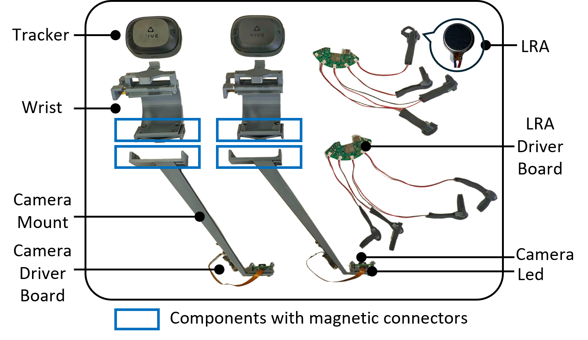
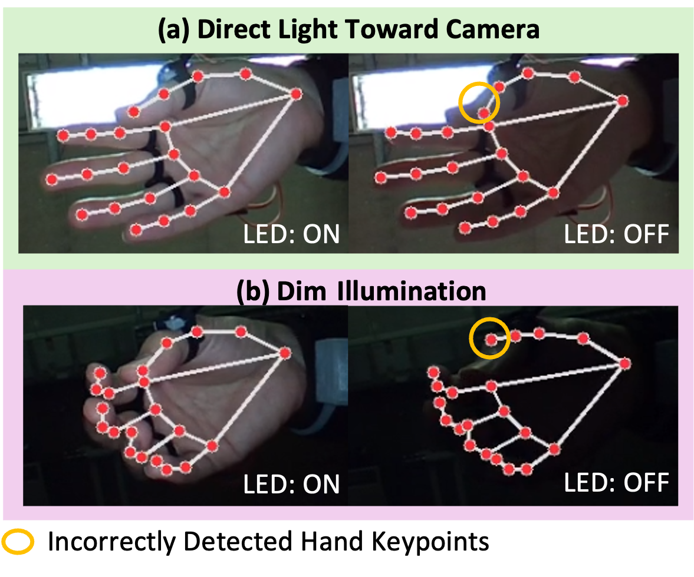
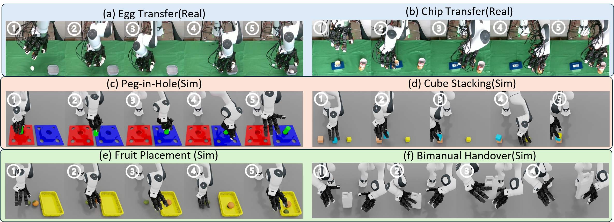
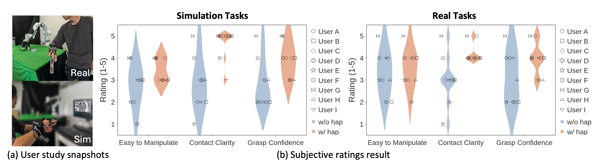
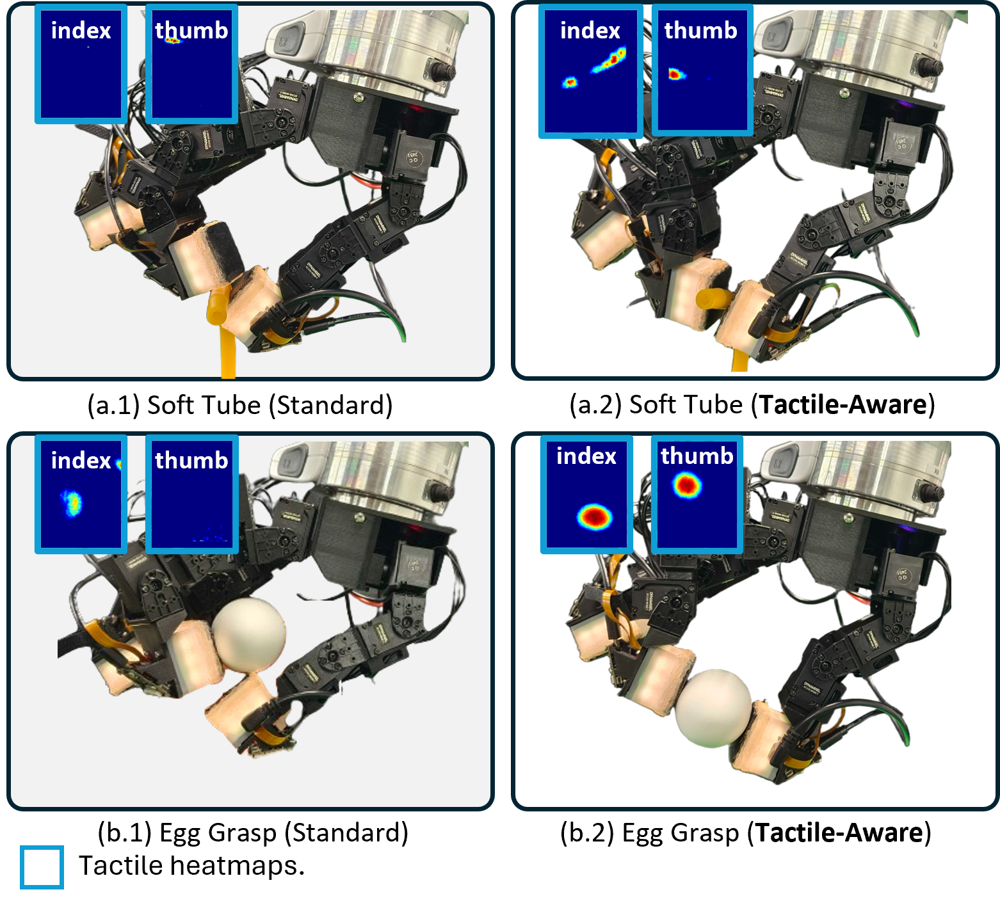
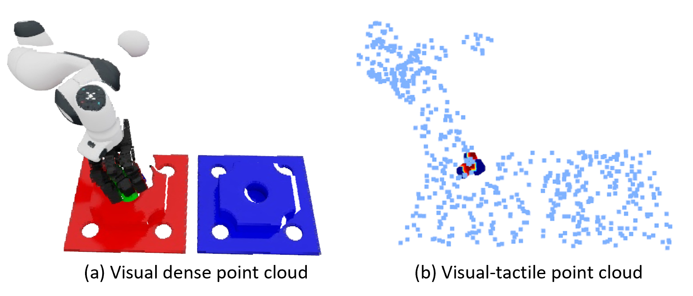
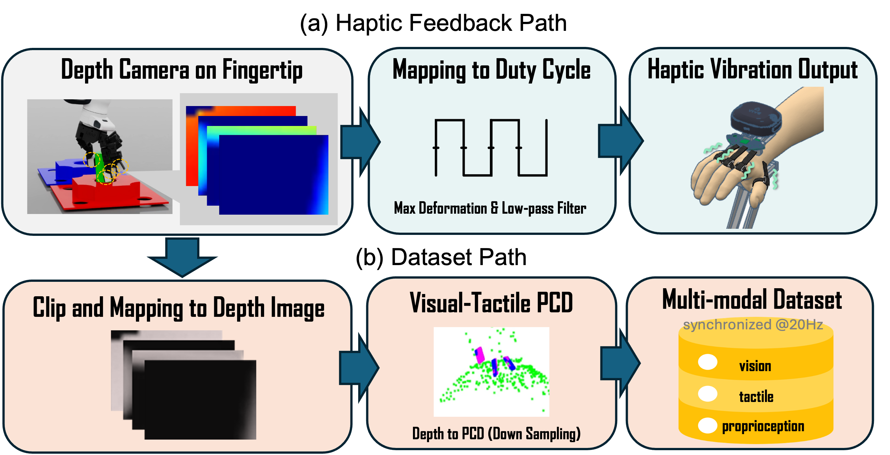

Low-cost Wearable Setup
$550 total hardware cost, 0.7 kg wearable burden, wrist-mounted fisheye camera, tracker-based wrist pose, and finger-wise vibrotactile feedback.
Learning from demonstration is a promising approach for dexterous manipulation, but collecting high-quality contact-critical demonstrations remains difficult with low-cost teleoperation hardware. We present ViHaTeleop, a lightweight (0.7 kg), low-cost ($550) visual-haptic teleoperation system with SLAM-based wrist tracking, camera-based hand tracking, and finger-wise vibrotactile feedback through Linear Resonant Actuators (LRA). The system includes several design choices (LED illumination, fisheye hand camera, and tactile-aware retargeting constraints) and is deployed on Franka + LEAP Hand + 9DTact in both real and simulated environments. Under matched with/without-haptic conditions with nine participants across six contact-critical tasks, haptics improved success rates across all tasks (+2.2 to +15.6 percentage points), while completion-time effects were task-dependent. Subjective ratings showed significant gains in contact clarity and grasp confidence in both simulation and real-world settings (Wilcoxon signed-rank, p < 0.05). We also integrate a lightweight depth-camera-based tactile proxy in Isaac Sim, enabling a full pipeline from multi-modal demonstration collection to visual-tactile policy training. Preliminary downstream validation by training visual-tactile policies from collected demonstrations shows tactile cues benefit contact-critical subtasks (peg-in-hole: +17 percentage points over vision-only).
$550 total hardware cost, 0.7 kg wearable burden, wrist-mounted fisheye camera, tracker-based wrist pose, and finger-wise vibrotactile feedback.
Designed for delicate tasks where contact onset, stable grasping, insertion, and slip awareness materially affect demonstration quality.
Includes teleoperation, tactile-aware retargeting, Isaac Sim tactile proxy, multimodal data collection, and downstream visual-tactile policy learning.







The visual-tactile representation and the depth-camera-based tactile proxy together support the full pipeline from demonstration collection to downstream policy learning.
This is the primary project repository for dataset generation, data processing, and policy-side rollout integration.
The simulator-side teleoperation stack, replay pipeline, and Isaac Sim execution backend live in the companion repository.
@inproceedings{vihateleop2026,
title={ViHaTeleop: A Low-Cost, Lightweight Visual-Haptic Teleoperation System for Dexterous Manipulation Learning},
author={Zhu, Fucai and Lai, Yanhou and Maestre, Paul and Hashimoto, Koichi},
booktitle={IEEE/RSJ International Conference on Intelligent Robots and Systems (IROS)},
year={2026}
}